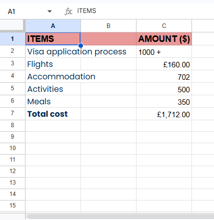
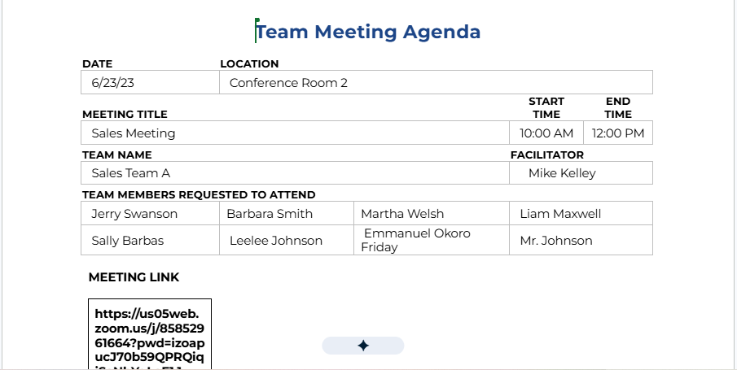

Executive coordination, systems, and data organization for growing remote teams — with a growing base in AI productivity tools and workflow systems.
Running a growing team means the to-do list outgrows the calendar fast.
You end up doing the things only you can do — and also answering emails, coordinating meetings, tracking budgets, chasing follow-ups.
Hiring a full internal ops team isn't realistic yet. But letting things slip isn't either.
Imagine having someone who quietly keeps the operational side moving — calendars protected, inboxes calm, meetings followed up on, data current — without you having to manage the manager.
That's what I do.
I help founders and growing teams keep execution organized — priorities managed, communication handled, workflows running — so the people building the business can focus on building it.
I support this through executive coordination, systems and data organization, and cross-functional follow-through — with hands-on experience in multi-platform content creation and growth/sales support, plus a growing base in AI productivity tools and workflow systems.
I work with remote teams across time zones, supporting founders and operators wherever they're building.
Five areas I own for the people I work with.
Managing calendars, scheduling, and priorities to keep an executive's time protected and productive.
Organizing inboxes and communication flow so nothing important gets lost and response time stays fast.
Maintaining accurate, well-structured data across spreadsheets, databases, and CRM systems.
Building agendas, capturing decisions, and tracking action items so meetings turn into progress.
Planning and coordinating travel end-to-end, from research to itinerary.
Planning and producing multi-platform content (TikTok, Instagram, Facebook, YouTube) and supporting revenue efforts through email campaign systems and paid promotion management.
Real client work, redacted for confidentiality.
Managed a high-volume inbox for a senior executive — prioritizing messages, drafting responses, and maintaining organized folder systems while ensuring confidentiality throughout.
Researched and booked end-to-end travel — flights, accommodations, and activities — and built a structured itinerary.
Entered and maintained accurate data across spreadsheets and CRM systems, keeping records current and easy for the team to act on.
Tracked expenses and built a cost breakdown for a multi-part project, helping the client see spend against plan at a glance.

Built structured meeting agendas and captured decisions and action items into concise minutes, keeping the team aligned between meetings.

Details redacted for client confidentiality.
★★★★★ 5.0 — Client rating on Upwork
"Excellent job! Barizaasi delivered outstanding work promptly."
"My VA does not disappoint. She provides me with critical skills I need every day so I can focus on other tasks that keep my business running more efficiently. Now, I look forward to working with her and finding new opportunities for her to contribute to my company."
I'll reply within 24–48 hours to set up a short call, understand what you need support with, and confirm scope before we start.
Founders and growing remote teams who need executive support, operations coordination, or systems help — particularly in SaaS, HR tech, and other technology-driven businesses.
Depends on the task — routine coordination work is handled same-day; larger systems or research requests are scoped with a clear timeline upfront.
Rates and structure are discussed based on scope and hours needed — happy to walk through options on a call.
Executive operations, communication and inbox systems, data and reporting support, and meeting/follow-up systems — with growing capability in AI productivity tools and Airtable.
We start with a short call to understand priorities, agree on scope, and set up the systems needed — then I keep things running with regular, clear updates.